This page brings together basic information about the Syriac script and its use for the Assyrian Neo-Aramaic (Swadaya) language. It aims to provide a brief, descriptive summary of the modern, printed orthography and typographic features, and to advise how to write Assyrian Neo-Aramaic using Unicode.
There are many dialectal variations in pronunciation, so the phonetic information on this page attempts to reflect one dialect description for which there is a reasonably good source. It mostly represents the standard Iraqi koine, as represented in the Wiktionary list of lemmas, with additional information from the course in reading Assyrian by Dr. Madeleine Davis Moradkhan, who based her approach on the "Assyrian Reader for Adult Beginners" by Haido & Yousif. Various character notes also contain information about correspondences in the Urmian dialect.
Ethnologue lists around 600,000 speakers of Assyrian Neo-Aramaic, also know as Suret, in all countries. These speak a number of dialects, with relatively high mutual intelligibility. One prestige dialect that arose from missionary activity in the mid 1800s is Urmian, with users located in Iran. A more recent standard, Iraqi Koine, developed in the 20th century. Other major dialects include Nineveh Plains and Ashiret. See Wikipedia for a map of distribution.
Instability throughout the Middle East over the past century has led to a worldwide diaspora of Assyrian speakers, with most speakers now living abroad in such places as North and South America, Australia, Europe and Russia, but the homeland includes Upper Mesopotamia, Iranian Azerbaijan, southeastern Anatolia and the northeastern Levant, which is a large region stretching from the plain of Urmia in northwestern Iran through to the Erbil, Kirkuk and Duhok regions in northern Iraq. Speakers of Assyrian are ethnic Assyrians and are the descendants of the ancient inhabitants of Mesopotamia.ws
ܣܘܼܪܝܬ
The orthography used to write Assyrian Neo-Aramaic derives from the Estrangela form of the Syriac script, which dates from the 1st century AD. The Madnhaya, or 'eastern', version formed as a form of shorthand developed from Esṭrangela and progressed further as handwriting patterns changed. Modern usage differs from the orthography used for Syriac in that it usually includes vowel diacritics.
Syriac is, in principle, an abjad. The script relies mostly on consonant sounds to write words, although in Modern Aramaic written in Syriac vowel sounds tend to be written using diacritics, making it more like an alphabet. See the table to the right for a brief overview of features for the modern Assyrian Neo-Aramaic orthography.
The Syriac script has three main orthographic systems: maḏnḥāyā (ܡܲܕ݂ܢܚܵܝܵܐ) (eastern), ʾesṭrangēlā (ܐܣܛܪܢܓܠܐ), and serṭā (ܣܶܪܛܳܐ) (western). Assyrian Neo-Aramaic uses a version of the maḏnḥāyā orthography, derived from East Syriac texts. However, the Estrangelo style may be used for titlesr,5.
Words in Syriac are separated by spaces.
Text runs from right to left in horizontal lines. Numbers run left to right within the right to left flow.
Modern Aramaic written in Syriac is usually fully pointed, making it more an alphabet than an abjad. There are however obligatory points and optional diacritics. For vowels, Assyrian Neo-Aramaic uses a set of dotted diacritics. (rather than the Greek symbols used in western orghographies). There are 3 matres lectionis, and 6 vowel diacritics. ❯ vowels
Standalone vowels are written using ܐ as a carrier. ❯ standalone
There is no equivalent of the Arabic sukun to indicate clusters of consonant sounds. ❯ clusters
All the letters in the Syriac block are consonants. There are 22 basic consonant letters, but these can be combined with one of 4 diacritics to create 9 additional sounds. The 6 plosives (hard sounds) can also represent fricative sounds (soft) in unpointed text.
Other diacritics are used to describe sounds in long consonant clusters, indicate unpronounced consonants, identify plural forms, and disambiguate identical words in unpointed text.
Character index
Letters
Show
Consonants
ܒ␣ܓ␣ܕ␣ܗ␣ܘ␣ܙ␣ܚ␣ܛ␣ܝ␣ܟ␣ܠ␣ܡ␣ܢ␣ܣ␣ܥ␣ܦ␣ܨ␣ܩ␣ܪ␣ܫ␣ܬ
Vowels
ܐ
Other
ـ
Combining marks
Show
Vowels
ܼ␣ܿ␣ܹ␣ܸ␣ܲ␣ܵ
Other
̣␣̮␣̰␣̱␣̃␣̄␣̇␣̈␣݂␣݈␣݀␣݁␣݇␣̈␣̤␣̭␣ܑ
Punctuation
Show،␣܆␣܇␣؛␣؟
ASCII
.␣(␣)
Other
Show␣␣␣␣␣␣␣␣␣␣␣␣
To be investigated
̊␣̥␣͏␣܀␣܁␣܂␣܃␣܄␣܅␣܈␣܉␣܊␣܋␣܌␣܍␣݃␣݄␣•␣
Items to show in lists
Phonology
These are sounds of the Assyrian Neo-Aramiac language, but take into account some dialectal variation.
Click on the sounds to reveal locations in this document where they are mentioned.
Phones in a lighter colour are non-native or allophones. Source Wikipedia.
Vowel sounds
Plain vowels
Diphthongs
Consonant sounds
labial
dental
alveolar
post-
alveolar
palatal
velar
uvular
pharyngeal
glottal
stops
pb
td
kɡ
q
ʔ
emphatic
tˤ
affricates
t͡ʃd͡ʒ
fricative
fv
θð
sz
ʃʒ
xɣ
ħʕ
h
emphatic
sˤ
nasal
m
n
approximants, trills, flaps
w
l r
j
Among most Assyrian Neo-Aramaic speakers, the pharyngeal ʕ is pronounced as ʔ or ∅, or geminates a previous consonant.
Show notes on dialectal variations, taken directly from Wikipedia:
In Iraqi Koine Assyrian and many Urmian & Northern dialects, the palatals c, ɟ and aspirate cʰ are considered the predominate realisation of k, g and aspirate kʰ.
The phoneme ħ is only used by Assyrian-speakers under larger Arabic influence. In most dialects, it is realised as x. The one exception to this is the dialect of Hértevin, which merged the two historical phonemes into ħ, thus lacking x instead.
The pharyngeal ʕ, represented by the letter `e, is a marginal phoneme that is generally upheld in formal or religious speech. Among the majority of Assyrian speakers, `e would be realised as aɪ̯, eɪ̯, ɛ, j, deleted, or even geminating the previous consonant, depending on the dialect and phonological context.
f is a phoneme heard in the Tyari, Barwari and Chaldean dialects. In most of the other Assyrian varieties, it merges with p. though f is found in loanwords for these varieties of Assyrian.
The phonemes t and d have allophonic realisations of θ and ð (respectively) in most Lower Tyari, Barwari and Chaldean dialects, which is a carryover of begadkefat from the Ancient Aramaic period.
In the Upper Tyari dialects, θ is realised as ʃ or t; in the Marga dialect, the t may at times be replaced with s.
In the Urmian dialect, w has a widespread allophone ʋ (it may vacillate to v for some speakers).
In the Jilu dialect, q is uttered as a tense k. This can also occur in other dialects.
ɡ is affricated, thus pronounced as d͡ʒ in some Urmian, Tyari and Nochiya dialects. k would be affricated to t͡ʃ in the same process.
ɣ is a marginal phoneme that occurs across all dialects. Either a result of the historic splitting of g, through loanwords, or by contact of x with a voiced consonant.
ʒ is found predominately from loanwords, but, in some dialects, also from the voicing of ʃ (e.g. (ḥašbunā)xaʒbu:na:, counting, from the root ḥ-š-b, to count) as in the Jilu dialect or the fortition of j (e.g. Urmiynāyā > UrmižnāyāUɾ:mɪ:ʒna:ja:, Urmian from mijawater)
n can be pronounced ŋ before velar consonants x and q and as m before labial consonants.
Tone
Assyrian Neo-Aramaic is not a tonal language.
Structure
tbd
Vowels
The phonetics described here are based on the particular dialect mentioned at the top of this page. There are a number of different dialects which tend to write the text the same way, but pronounce it differently. For more detail, see Wikipedia.
Two of the following diacritics are only used in combination with a mater lectionis (see vletter). Other vowels are expressed by simply applying diacritics to a consonant letter. This is the complete set of diacritics used for vowels.
◌ܼ␣◌ܸ␣◌ܹ␣◌ܿ␣◌ܲ␣◌ܵ
Consonant sounds following 0732 and 0738 are usually geminated.
YUDH with 2 sets of vowel diacritics: i is indicated by the dot below, and ɑ by the 2 dots above.show composition
ܐܝܼܛܵܠܝܼܵܐ
Consonants representing vowels (matres lectionis)
Three consonants are used in combination with diacritics to represent vowels.
ܐ␣ܝ␣ܘ
ܐ[U+0710 SYRIAC LETTER ALAPH] is usually found at the beginning or end of a word. Words that begin with a vowel sound typically start with this letter, carrying a vowel diacritic, or preceding one of the other two. At the end of a word it is usually silent.
ܐܲܩܠܵܐ
ܘ[U+0718 SYRIAC LETTER WAW] and ܝ[U+071D SYRIAC LETTER YUDH], when used as a vowel, always have a dot above or below, and those dots are only used in conjunction with those letters. The possibilities are as follows.
The 4 multipart vowels listed here all consist of a diacritic and a mater lectionis. Diphthongs and glides are not included here.
Click on the letters for examples.
ܝܼ␣ܘܼ␣◌ܹܝ␣ܘܿ
Standalone vowels
At the beginning of a word, all vowels are attached to or follow a silent ܐ [U+0710 SYRIAC LETTER ALAPH].
i
ܐܝܼ
ɪ
ܐܸ
u
ܐܘܼ
e
ܐܹܐܹܝ
ə
ܐܸ
o
ܐܘܿ
a
ܐܲ
ɑ
ܐܵ
Simplified table of word-initial vowel sounds with ALAPH as the base.
Vowel length
tbd
Nasalisation
tbd
Tones
Assyrian Neo-Aramaic is not a tonal language.
Vowel sounds to characters
This section maps Assyrian Neo-Aramaic vowel sounds to common graphemes in the Madnhaya orthography. Click on a grapheme to find other mentions on this page (links appear at the bottom of the page). Click on the character name to see examples and for detailed descriptions of the character(s) shown.
All the letters in the Syriac block are consonants. There are 22 basic consonants, but these can be combined with one of 3 diacritics to create additional sounds. See consonantSummary for the combinations as well as the simple consonants.
Assyrian Neo-Aramaic uses many diacritics to produce additional sounds from the basic set of Syriac consonants. Hard and soft diacritics and the maǧlīyānā extend the consonant repertoire; the marhtana is used with 3-consonant clusters; talqana silences consonants; syame indicates plural forms; and there are some
additional marks
used to disambiguate words.
Hard and soft sounds
݂␣݁␣̮
Six Syriac consonant symbols represent two sounds, one 'hard' and one 'soft'. The hard sound is an unaspirated plosive, the soft sound is an aspirated fricative. The intended sound of the letter can be made explicit using diacritics.
In the maḏnḥāyā style, soft form marks may be omitted if they would interfere with the vowel marks. For native words, softening depends on the letter's position within a word or syllable, location relative to other consonants and vowels, gemination, etymology, and other factors. Foreign words do not always follow the rules for softening.w
Hard form. In principle, a high dot indicates the hard form. The code point to use is
◌݁[U+0741 SYRIAC QUSHSHAYA].
However, in Assyrian it is not normally used.
Hobermand,506 lists one additional combination, but no new sounds, however he places the tilde above the base consonant. In this position, the diacritic is still called maǧlīyānā, but uses the code point 0303.
ܒ̈[U+0308 COMBINING DIAERESIS]
(shown here over BETH because of font rendering problems) is used to represent the Syriac syame (ܣܝ̈ܡܐ), which indicates plural nouns, adjectives and participles. It is needed for unpointed text because many plural words would otherwise look the same as the singular word, eg. the following could be read as either
malkāking
or as
malkēkings.
ܡܠܟܐmlk̋ʾ
Instead, the plural form can be written
ܡܠܟ̈ܐmlk̋ʾ
Some modern usage omits this diacritic when vowel marks are present, because it is redundant, however it is still generally used.
ܡܲܠܟܵܐܡܲܠܟܹ̈ܐ
Although it's not strictly needed, even in unpointed text, for non-regular words, it is also used for them, eg.
ܒܲܝܬܵܐˈbaj.tɑhouseܒܵܬܹ̈ܐbɑttehouses
An author can place this mark above any letter in a word, but if the word contains one or more
ܪ[U+072A SYRIAC LETTER RISH]
the mark is generally placed over the one which is nearest the word end, and replaces the single dot above it, eg.
ܢܘܼܟ݂ܪ̈ܵܝܹܐ
Other likely locations include low rising letters, and letters near the middle or end of a word.w
Disambiguation marks
̇␣̣␣݀
Diacritics can be used to disambiguate the pronunciation of otherwise identical-looking words in unpointed text. For example:
ܒ̇[U+0307 COMBINING DOT ABOVE]
and
ܒ̣[U+0323 COMBINING DOT BELOW]
(shown here with BETH because of font issues) were used for unpointed Classical Syriac to disambiguate certain letters, morphemes or words, and they are still in use for Assyrian in a few words, eg. compare
ܡ̇ܢṁnmanwhoܡ̣ܢṃnmɪnfrom
The dot may also be written over the 3rd person feminine suffix.
ܐܝܼܕ݂ܵܗ̇
ܐ݇ܬܹܐ ܠܵܗ̇
Feminine marker
ܬ݀ [U+0740 SYRIAC FEMININE DOT]
(shown here below TAW because of font problems when displaying alone) is a feminine marker used with
ܬ[U+072C SYRIAC LETTER TAW]
to indicate a feminine suffix. East Syriac fonts should render as two dots below the base letter, whereas West Syriac fonts render as a single dot to the left of the base, eg. compare in the Eastern (top) and Western (bottom) orthographies in fig_feminine (click on the images to see the underlying code points):
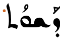
The same word in Eastern (left) and Western (right) script styles, showing the different appearance of the feminine marker in each (coloured here, after or below the last character.)
There appear to be no words in the Wiktionary list that use this diacritic, and it isn't mentioned in Davis, even though there is a specific shape for eastern script styles.
Isolated forms
Isolated versions of 3 letters, such as may be found in counter styles, are usually presented as a doubled letter, using intial and final forms, ie.
ܟܟkܡܡmܢܢn
The letter
ܟ
when handwritten alone may also look like
ܟـk
Single letter words
Four short, single letter words are written with the word that follows them, not separate. They are:
ܒܕܘܠ
Before a word that begins with a vowel, or a consonant followed by a vowel, these four words have no vowel markings. If the next consonant is not followed by a vowel, however, they are written with a following
ܲ [U+0732 SYRIAC PTHAHA DOTTED]. For example, compare:
◌݇[U+0747 SYRIAC OBLIQUE LINE ABOVE] is used in the Eastern style to indicate letters that are not pronounced. It is frequently used in the modern Aramaic koine to bridge difference in dialects. For example, ܒܬ݇ܪ is pronounced baθar in some modern dialects, harking back to the classical pronunciation, but bar in Urmi and the koine.
There is no equivalent to the Arabic sukun to indicate clusters of consonant sounds.
See, however, the note about collapsing 2 yodh characters to 1 in combiningV.
̄␣̱
ܒ̱ [U+0331 COMBINING MACRON BELOW]
and
ܒ̄ [U+0304 COMBINING MACRON]
(shown here with BETH, to make the font show the relative position) are used with sequences of 3 consonants. The first lengthens the middle consonant, while the second adds a short epenthetic sound to aid pronunciation.
The short a and ɪ vowels are only used in closed syllables, so if they are followed by an intervocalic consonant, it indicates that the consonant is doubled,d
ܣܲܡܲܐ
Consonant sounds to characters
This section maps Assyrian Neo-Aramaic consonant sounds to common graphemes in the Eastern Syriac orthography. Click on a grapheme to find other mentions on this page (links appear at the bottom of the page). Click on the character name to see examples and for detailed descriptions of the character(s) shown.
Sounds listed as 'infrequent' are allophones, or sounds used for foreign words, etc.
The Assyrian Reading Course describes an additive numbering system based on alphabetic letters, which is used for book publishing data, biblical references,r,51 etc., eg. ܒܪܝܼܬܵܐ ܝܗ: 1-6
Comparative counters produced by Assyrian counter styles.
The counting system uses the letters shown below. It is specified for a range between 1 and 9,999,999. However, the code points of the diacritics used here for 500–900, and 100,000–9,000,000 are not confirmed as accurate (though they should look right).
Syriac script is written horizontally, right-to-left. Like other RTL scripts, such as Arabic and Hebrew, modern numbers and text in LTR scripts are displayed left-to-right (producing 'bidirectional' text).
Bidirectional Syriac text. Numbers and Latin text (highlighted) are read left-to-right, and the rest of the text flows right-to-left.
The Unicode Bidirectional Algorithm automatically takes care of the ordering for all the text in fig_bidi_text, as long as the 'base direction' is set to RTL. In HTML this can be set using the dir attribute, or in plain text using formatting controls.
If the base direction is not set appropriately, the directional runs will be ordered incorrectly as shown in fig_bidi_no_base_direction.
The exact same sequence of characters with the base direction set to RTL (top), and with no base direction set on this LTR page (bottom).
Unicode provides a set of 10 formatting characters that can be used to control the direction of text when displayed. These characters have no visual form in the rendered text, however text editing applications may have a way to show their location.
In Unicode 6.1, the Unicode Standard added a set of characters which do the same thing but also isolate the content from surrounding characters, in order to avoid spillover effects. They are [U+2067 RIGHT-TO-LEFT ISOLATE] (RLI), [U+2066 LEFT-TO-RIGHT ISOLATE] (LRI), and [U+2069 POP DIRECTIONAL ISOLATE] (PDI). The Unicode Standard recommends that these be used instead.
There is also [U+2068 FIRST STRONG ISOLATE] (FSI), used initially to set the base direction according to the first recognised strongly-directional character.
[U+200F RIGHT-TO-LEFT MARK] (RLM) and [U+200E LEFT-TO-RIGHT MARK] (LRM) are invisible characters with strong directional properties that are also sometimes used to produce the correct ordering of text.
A sequence of European numbers, for example a range separated by hyphens, runs from right to left in the Syriac script (and Arabic or Thaana scripts), whereas for Persian, Hebrew, N’Ko or Adlam scripts it runs left to right.
fig_range shows some Syriac text, which is right-to-left overall, containing a numeric range that is ordered RTL, ie. it starts with 240 and ends with 250.
A numeric range in Syriac language text.
The Unicode Bidirectional Algorithm automatically produces the expected ordering when a sequence or expression follows Syriac characters. However, a sequence that appears alone on a line doesn't benefit from this, so to make the text appear correctly for Syriac you should add [U+061C ARABIC LETTER MARK] (ALM) at the start of the line (see fig_ALM). This is an invisible formatting character.
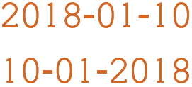
A numeric date alone on a line of RTL text, with ALM before it (top), and without (bottom). (Click on each line to see the code points.)
Similar special ordering is applied to numbers in equations, such as 1 + 2 = 3, for Syriac language text.
For additional details on how direction of ranges interacts with surrounding characters and separators used, see the section Expressions & sequences in the Modern Standard Arabic orthography description.
Glyph shaping & positioning
This section brings together information about the following topics:
writing styles;
cursive text;
context-based shaping;
context-based positioning;
baselines, line height, etc.;
font styles;
case & other character transforms.
The orthography has no case distinction, and no special transforms are needed to convert between characters.
Font styles
Syriac has 3 major variant writing styles. The code points for the consonant letters are the same, but the shapes of the letters and code points and shapes of vowel diacritics can vary significantly. fig_writing_styles shows the differences using typical fonts for each style.
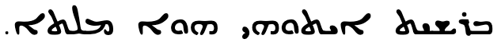
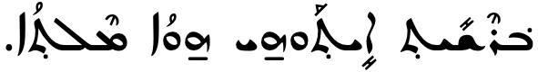
The opening words of the Gospel of St John in (top to bottom) Estrangelo, Eastern Syriac and Western Syriac. Source w,#Alphabet_forms
Assyrian Neo-Aramaic often uses the Assyrian Estrangela style for headings, which looks like a cross between the typical Assyrian font and the Estrangelo Edessa font.
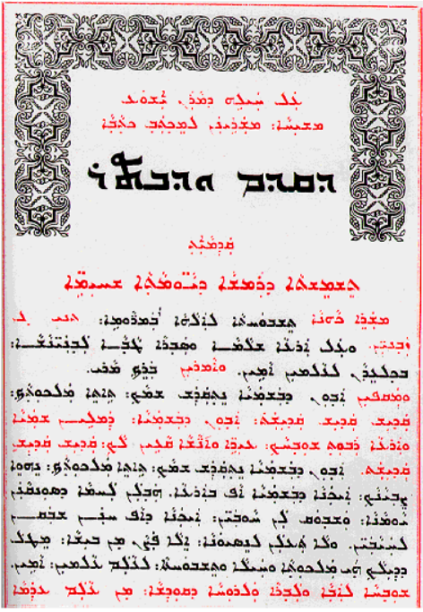
An East Syriac text with Assyrian Estrangela styles in the headings.n,40
The style of lettering in the title of fig_heading_styles_east uses a special Assyrian style of Estrangela. fig_assyrian_styles shows typical letter shapes for 2 Assyrian styles and Syriac Estrangela. The top line has shapes typically used for normal Assyrian text, and the middle line shows a style used for headings.
A comparison of letter shapes in Assyrian Adiabene (top; used for standard body text), in Assyrian Estrangela (middle; used for headings), and in Edessa Estrangelo (bottom; used for Syriac). r,54
Cursive text
Syriac is cursive, ie. letters in a word are joined up. Fonts need to produce the appropriate joining form for a code point, according to its visual context, but the code point used for a given letter doesn't change.
ܦܘܠܝܛܝܩܝܬܐ
Letters join on the right or both sides in Syriac script.
Eight letters join only to the right.
ܐ␣ܬ␣ܕ␣ܨ␣ܙ␣ܗ␣ܪ␣ܘ
All other consonants join on both sides.
Cursive joining forms
The cursive treatment produces only minor changes to glyph shapes in most cases. A small number of letters, however, exhibit noteworthy changes, especially in word final positions. fig_joining_forms and fig_right_joining_forms show all the basic shapes in Assyrian and what their joining forms look like. Significant variations are highlighted.
isolated
right-joined
dual-join
left-joined
Assyrian letters
ܒ
ـܒ
ـܒـ
ܒـ
ܒ␣ܒ݂
ܦ
ـܦ
ـܦـ
ܦـ
ܦ␣ܦ̮
ܣ
ـܣ
ـܣـ
ܣـ
ܣ
ܩ
ـܩ
ـܩـ
ܩـ
ܩ
ܫ
ـܫ
ـܫـ
ܫـ
ܫ␣ܫ̰
ܛ
ـܛ
ـܛـ
ܛـ
ܛ
ܡ
ـܡ
ـܡـ
ܡـ
ܡ
ܟ
ـܟ
ـܟـ
ܟـ
ܟ␣ܟ݂␣ܟ̰
ܚ
ـܚ
ـܚـ
ܚـ
ܚ
ܝ
ـܝ
ـܝـ
ܝـ
ܝ
ܓ
ـܓ
ـܓـ
ܓـ
ܓ␣ܔ␣ܓ݂␣ܓ̰
ܠ
ـܠ
ـܠـ
ܠـ
ܠ
ܥ
ـܥ
ـܥـ
ܥـ
ܥ
ܢ
ـܢ
ـܢـ
ܢـ
ܢ
Joining forms for shapes that join on both sides.
isolated
right-joined
Assyrian letters
ܐ
ـܐ
ܐ
ܬ
ـܬ
ܬ␣ܬ݂
ܙ
ـܙ
ܙ␣ܙ̰␣ܙ̃
ܨ
ـܨ
ܨ
ܘ
ـܘ
ܘ
ܗ
ـܗ
ܗ
ܕ
ـܕ
ܕ␣ܕ݂␣ܪ
Joining forms for shapes that join on the right only.
Managing glyph shaping
[U+200D ZERO WIDTH JOINER] (ZWJ) and [U+200C ZERO WIDTH NON-JOINER] (ZWNJ) are used to control the joining behaviour of cursive glyphs. They are particularly useful in educational contexts, but also have real world applications.
ZWJ permits a letter to form a cursive connection without a visible neighbour.
ZWNJ prevents two adjacent letters forming a cursive connection with each other when rendered.
Context-based shaping & positioning
Context-based shaping
See just above for shaping related to cursive joining.
Ligatures
Apart from the shaping required to support cursive behaviour, there are also typical ligatures, such as those shown in fig_serto_lig, some of which are optional or font-dependent.
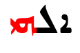
he + yudh
ܐܠܗܝ
taw + alaph
ܬܫܟܘܚܬܐ
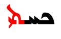
taw + yudh
ܟܚܬܝ
Ligatures in East Syriac style orthography.
Context-based positioning
Sometimes clashes between diacritic marks have to be resolved by repositioning one of the diacritics, or sometimes producing a different solution.
For example, marks are usually centred vertically over or under a base character. If, however, ݂[U+0742 SYRIAC RUKKAKHA] appears below ܕ[U+0715 SYRIAC LETTER DALATH] when the glyph for that has a dot below, the mark is moved slightly to the right, as shown here.
ܕ݂
Rukkakha moves to the right to accommodate the dot under dalath.
In this example, the RISH character carries not only a combining diaeresis, but also a vowel mark, which is moved upwards to ride above the former.
ܪ̈ܵ vs ܝܵ
Rish + diaeresis + vowel mark causes stacking diacritics.
Alaph shaping
A feature of Eastern and Western Syriac styles is that an unjoined alaph within a word has a different shape according to whether or not it is word-final. For example, fig_alaph_joining shows the word ܡܠܘܿܐܵܐ where the 2 alaph characters at the end have different shapes, although both are unconnected.
A word showing different shapes for alaph.
Alaph also ligates word-finally with
ܬ [U+072C SYRIAC LETTER TAW]
when following a connecting letter, eg. compare the shaping at the end of
ܐܸܓܲܪܬܵܐ
and
ܐܸܫܬܵܐ (see fig_alaph_ligature).
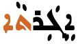
ALAPH ligating with TAW at the end of a word after a connecting letter (top) and not ligating after a non-connecting letter (bottom).
After ܠ [U+0720 SYRIAC LETTER LAMADH]alaph typically has a special, ligated shape, which also appears at word end. fig_alaph_ligature_l shows this in the word ܠܲܝܠܹܐ,
however the default font used for Assyrian text on this page (East Syriac Adiabene) doesn't support it (Noto fonts do).
ALAPH ligating with LAMADH at the end of a word.
Font styling & weight
tbd
Graphemes
Grapheme clusters
Do Unicode grapheme clusters appropriately segment character units for the script? Are there special requirements when double-clicking on the text, or moving through the text with the cursor, or backspace, etc.?
Punctuation & inline features
Word boundaries
Syriac uses spaces between words.
There are no one-letter words. One letter conjunctions and prepositions (such as
ܘw-and
or
ܒb-by, with)
are written contiguous with the word they precede.
ܒܐܵܗܵܐ
Some words may be hyphenated. The hyphen sits on the baseline, and has space around it. It's not clear which Unicode code point should be used: the example that follows uses
ـ [U+0640 ARABIC TATWEEL]
because the font doesn't move an ordinary hyphen to the baseline.
ܒܹܬ݂ ـ ܟܪ̈ܝܼܗܹܐ
Phrase & section boundaries
،␣؛␣܆␣܇␣.␣؟
Modern Syriac uses ASCII punctuation and punctuation borrowed from Arabic. For separators at the sentence level and below, the following are used.
The words 'left' and 'right' in the Unicode names for parentheses, brackets, and other paired characters should be ignored. LEFT should be read as if it said START, and RIGHT as END. The direction in which the glyphs point will be automatically determined according to the base direction of the text.
ܒ > ܓ" data-notes="Noto Sans Syriac Western 48px">
Both of these lines use > [U+003E GREATER-THAN SIGN], but the direction it faces depends on the base direction at the point of display.
The number of characters that are mirrored in this way is around 550, most of which are mathematical symbols. Some are single characters, rather than pairs. The following are some of the more common ones.
(␣)␣<␣>␣[␣]␣{␣}␣«␣»␣‹␣›
Quotations & citations
What characters are used to indicate quotations? Do quotations within quotations use different characters? What characters are used to indicate dialogue?
Emphasis
How are emphasis and highlighting achieved? If lines are drawn alongside, over or through the text, do they need to be a special distance from the text itself? Is it important to skip characters when underlining, etc? How do things change for vertically set text?
Abbreviation, ellipsis & repetition
What characters are used to indicate abbreviation, ellipsis & repetition?
[U+070F SYRIAC ABBREVIATION MARK] (SAM) indicates that a sequence of characters is an abbreviation (see fig_sam_abbrev). The line would ideally have a small circle at the start, middle and end. It normally starts to the left of the nearest tall letter to the end of the abbreviation.
Modern East Syriac texts use a punctuation mark for contractions of this sort.
A Syriac abbreviation mark (using the Estrangela style) applied to an abbreviation (above), and the unabbreviated word (below).
Inline notes & annotations
What mechanisms, if any, are used to create inline notes and annotations? (For referent-type notes such as footnotes, see below.)
Other punctuation
Punctuation not already mentioned, such as dashes, connectors, separators, etc.
Other inline text decoration
Numbers
The Syriac abbreviation mark is used in older texts to identify letters used as numbers by drawing a line above them. See numbers for more information.
When a line break occurs in the middle of an embedded left-to-right sequence, the items in that sequence are rearranged visually so that the reading direction remains top-to-bottom. latin-line-breaks shows how two Latin words are apparently reordered in the flow of text to accommodate this rule.
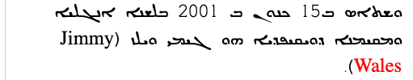
Syriac (estrangelo) with embedded Latin text. The lower of these two images shows the result of decreasing the line width, so that text wraps between a sequence of Latin words.
In digital text the rearrangement is automatic. Only the positions of the font glyphs are changed: nothing affects the order of the characters in memory.
Text alignment & justification
Does text in a paragraph needs to have flush lines down both sides? Does the script need assistance to conform to a grid pattern? Does the script allow punctuation to hang outside the text box at the start or end of a line? Where adjustments are need to make a line flush, how is that done? Does the script shrink/stretch space between words and/or letters? Are word baselines stretched, as in Arabic? What about paragraph indents?
ـ[U+0640 ARABIC TATWEEL] can be used, as in Arabic, to lengthen the baseline inside Syriac words.
Observation: It's not clear, however, whether the use of that is for justification, or simply for word stretching. Sometimes a word appears to contain a baseline elongation in order to provide more space for wide diacritics on adjacent bases.
Text spacing
tbd
This section looks at ways in which spacing is applied between characters over and above that which is introduced during justification.
Baselines, line height, etc.
tbd
Syriac uses the so-called 'alphabetic' baseline, which is the same as for Latin and many other scripts.
To include the long ascenders and descenders in Syriac, plus the (sometimes stacked) diacritics, line heights need to be slightly larger than for English text.
Counters, lists, etc.
tbd
Styling initials
tbd
Page & book layout
This section is for any features that are specific to Syriac and that relate to the following topics:
general page layout & progression;
grids & tables;
notes, footnotes, etc;
forms & user interaction;
page numbering, running headers, etc.
General page layout & progression
Syriac books, magazines, etc., are bound on the right-hand side, and pages progress from right to left.
Binding configuration for Assyrian books, magazines, etc.
Columns are vertical but run right-to-left across the page.
Tables, grids, and other 2-dimensional arrangements progress from right to left across a page.
Headings
Table headings are often distinguished from the main text by using a different writing style, in addition to size differences (see fontstyle). For Assyrian Neo-Aramaic this would usually be the Estrangela form of Syriac.


 [
[ [
[ [
[ [
[ [
[ [
[ [
[ [
[ [
[ [
[ 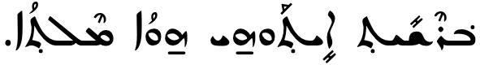
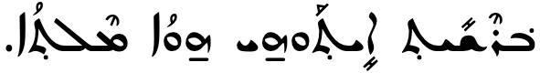
 [
[ [
[

 [
[


{kind=link}